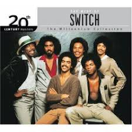

Rosemary's Baby is a great movie about a woman who gives birth to satans son.
It was released in 1968 and stars Mia Farrow
Here is a link to the rotten tomatoes page
Rosemary's Baby Rotten Tomatoes
One of my favorite artists is Switch
Here is a link to their wikipedia Switch Wiki
